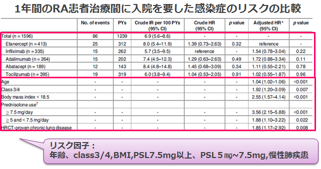
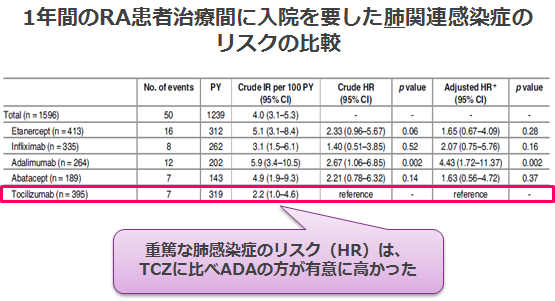

the SARABA study（国内）による重篤感染症頻度は同等
- ●日本における多施設共同後ろ向きコホート試験
- ●実臨床下での生物学的製剤間での入院を要した感染症のリスクを比較
- ●2009年～2014年の間に国内の施設でリウマチ科を標榜して生物学的製剤を使い始めたRA患者の全症例を使用
n=1,596件;ETN(413),IFX(335),ADA(264),ABT(189),TCZ(395)


どのBIOを使っても感染症リスクは同じ
どのBIOを使っても感染症リスクは同じ